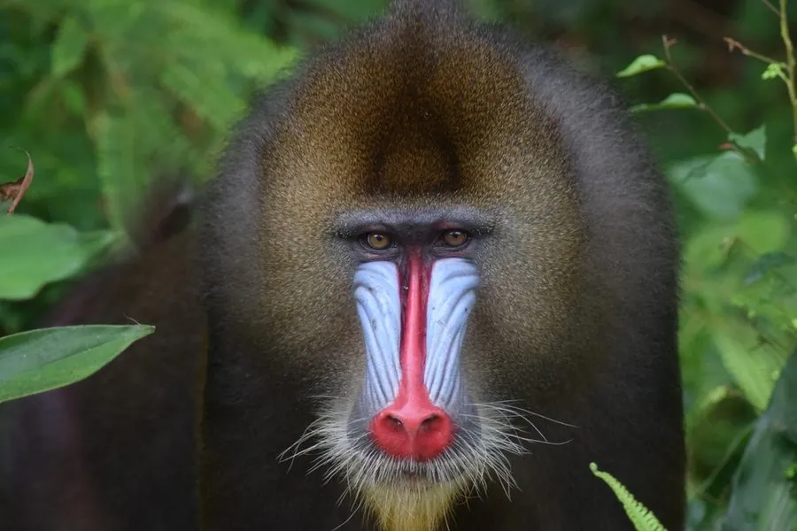

哺乳动物 · 动物界
山魈 Mandrillus sphinx

世界上体型最大的猴类，雄性面部有蓝红相间的鲜艳色彩、吻部带有黄须，过着一雄多雌的群体生活。
- 分类
- 门脊索动物门纲哺乳纲目灵长目科猴科属山魈属
- 栖息环境
- 非洲中部的热带雨林与河谷森林，地面活动为主
- 地理分布
- 加蓬、喀麦隆、赤道几内亚及刚果的热带雨林
- 保护级别
- IUCN 易危（VU）；CITES 附录Ⅰ
物种志
山魈体长 0.55–0.8 米，体重 13–35 kg，雄性明显大于雌性，是体型最大的猴类。雄性面部色彩极为醒目：鼻梁和眉脊呈蓝色，鼻端和嘴唇为鲜红色，面颊两侧有黄白色胡须；臀部皮肤呈蓝、紫、红色相间。全身毛色为深橄榄绿至棕褐色。
山魈分布于非洲中部的加蓬、喀麦隆、赤道几内亚和刚果，栖息于热带雨林和河谷森林，是地面活动为主的猴类。它以果实、种子、树叶、根茎和小型动物为食，结成 20–100 只的大群，雄性之间通过展示面部色彩、点头和战斗维持等级，一雄多雌。山魈多在白天活动，夜间爬到树上休息，群体行动范围大。雌性妊娠期约 170–190 天，每胎 1 仔。由于森林砍伐和丛林肉贸易，山魈数量下降，被列为易危，是非洲最受关注的灵长类之一。
形态与习性
- 食性果实、种子、树叶、根茎与小型动物
- 体长0.55–0.8 m
- 体重13–35 kg，雄性明显大于雌性
- 寿命约 20–25 年
- 繁殖妊娠期约 170–190 天，每胎 1 仔
- 社会结构20–100 只大群，一雄多雌
- 面部蓝色鼻梁、红色鼻端与黄白胡须
趣味知识
- 雄性山魈面部有蓝红相间的鲜艳色彩，是灵长类中最醒目的面孔之一。
- 山魈是体型最大的猴类，雄性体重可超过 30 kg。
- 它们结成几十只的大群在地面活动，夜间才爬到树上休息。
- 雄性山魈会通过点头、张口和展示面部色彩来炫耀地位。